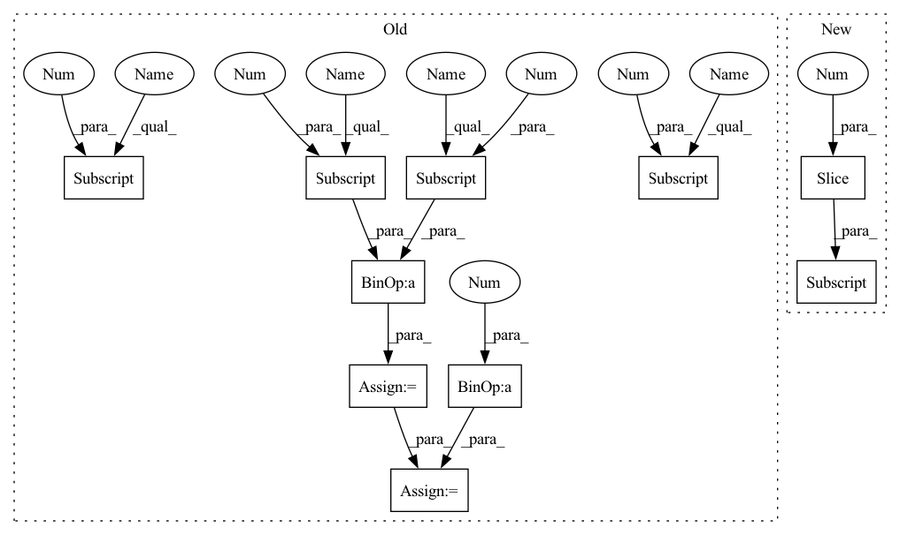

Pattern ID :1515
Before Change
for attr in node.attribute:
if attr.name == "kernel_shape":
kernel_shape = extract_attr_values(attr)
pad_x = params[2] - params[0]
pad_y = params [3] - params [1]
pad_x = min(pad_x, kernel_shape[0] // 2)
pad_y = min(pad_y, kernel_shape[1] // 2 )
return (pad_x, pad_y)
After Change
if is_symmetric(params):
return params[: len(params) // 2]
else:
pads = extract_padding_params(params)[::-1]
return pads
In pattern: SUPERPATTERN
Frequency: 3
Non-data size: 10
Instances Fragment ID: 6846376
Project Name: bbuf/onnx2x
Commit Name: 488f30f4cd93cf488791107129c5577ecf8b680c
Time: 2021-02-24
Author: 1182563586@qq.com
File Name: onnx2pytorch/utils.py
M Class Name: AnonimousClass
N Class Name: AnonimousClass
M Method Name: extract_padding_params_for_conv_layer(1)
N Method Name: extract_padding_params_for_conv_layer(2)
M Parent Class:
N Parent Class:
M File Name: onnx2pytorch/utils.py
N File Name: onnx2pytorch/utils.py
M Start Line: 99
M End Line: 115
N Start Line: 71
N End Line: 72
Before Change
return output
gamma = CalculateGamma(input, block_size=self.block_size, keep_prob=self.keep_prob)
input_shape = input.shape
p = gamma.repeat(input_shape)
input_shape_tmp = input.shape
random_matrix = torch.rand(input_shape_tmp, device=input.device)
one_zero_m = (random_matrix < p).float()
mask_flag = torch.nn.functional.max_pool2d(one_zero_m, (self.block_size, self.block_size), stride=1, padding=1)
mask = 1.0 - mask_flag
elem_numel = input_shape[0] * input_shape[1] * input_shape[2] * input_shape[3]
elem_numel_m = float(elem_numel)
elem_sum = mask.sum()
output = input * mask * elem_numel_m / elem_sum
return output
After Change
if self.data_format == "NCHW":
shape = x.shape[2:]
else:
shape = x.shape[1:3]
for s in shape:
gamma *= s / (s - self.block_size + 1)
matrix = torch.rand(x.shape, device=x.device) Fragment ID: 6846441
Project Name: miemie2013/miemiedetection
Commit Name: aabe1f2d364493c30179de6cf7d5c2d0c6ee7258
Time: 2021-12-30
Author: 53960695+miemie2013@users.noreply.github.com
File Name: mmdet/models/custom_layers.py
M Class Name: DropBlock
N Class Name: DropBlock
M Method Name: forward(2)
N Method Name: forward(2)
M Parent Class: torch.nn.Module
N Parent Class: torch.nn.Module
M File Name: mmdet/models/custom_layers.py
N File Name: mmdet/models/custom_layers.py
M Start Line: 538
M End Line: 576
N Start Line: 724
N End Line: 745
Before Change
for attr in node.attribute:
if attr.name == "kernel_shape":
kernel_shape = extract_attr_values(attr)
pad_x = params[2] - params[0]
pad_y = params[3] - params[1]
pad_x = min(pad_x, kernel_shape[0] // 2)
pad_y = min(pad_y, kernel_shape[1] // 2 )
return (pad_x, pad_y)
After Change
if is_symmetric(params):
return params[: len(params) // 2]
else:
pads = extract_padding_params(params)[::-1]
return pads
Fragment ID: 6846377
Project Name: bbuf/onnx2nn
Commit Name: 488f30f4cd93cf488791107129c5577ecf8b680c
Time: 2021-02-24
Author: 1182563586@qq.com
File Name: onnx2pytorch/utils.py
M Class Name: AnonimousClass
N Class Name: AnonimousClass
M Method Name: extract_padding_params_for_conv_layer(1)
N Method Name: extract_padding_params_for_conv_layer(2)
M Parent Class:
N Parent Class:
M File Name: onnx2pytorch/utils.py
N File Name: onnx2pytorch/utils.py
M Start Line: 99
M End Line: 115
N Start Line: 71
N End Line: 72